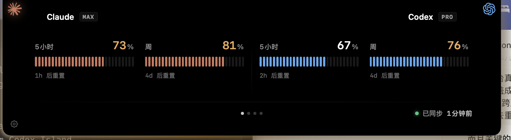
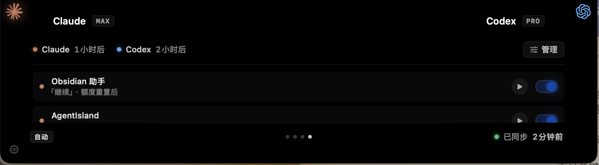

What is Agent Island?
An open-source macOS utility for Claude Code and Codex users. It watches long-running local agent sessions and makes finished, stalled, rate-limited, or waiting states visible.
Open-source macOS utility / MIT / v1.2.0
Your AI night-watch for Claude Code and Codex runs.
It watches long-running agent sessions in the background, then makes the handoff visible when a run is done, stalled, rate-limited, or waiting for you.
git clone https://github.com/tristan666666/agent-island.git
cd agent-island
./scripts/verify.shRepository proof
The homepage leads with the repo, version, license, and source build path because Agent Island is closer to a useful open-source Mac tool than a hosted SaaS brand page.
Scroll handoff
As you scroll, the state moves from quiet monitoring to a clear handoff, then to stalled and trusted resume states.
The transcript is still changing, so the island breathes instead of interrupting you.
Product surfaces
The same surfaces a contributor can inspect in the repo: usage state, reset timing, and local auto-trigger setup.


Get Started
Clone the repository for the full build path, or open the v1.2.0 tag for the exact public snapshot shown on this site.
Trust boundary
FAQ
The short version of the project docs: what it is, where it runs, what changed in v1.2.0, and what needs trust.
An open-source macOS utility for Claude Code and Codex users. It watches long-running local agent sessions and makes finished, stalled, rate-limited, or waiting states visible.
No. It is a local Mac app. Session state and trigger run logs stay on your machine unless you decide to share them.
The v1.2.0 version centers on live session states, a foreground turn alarm, auto-resume controls, and a status guide for the attention states.
Agent Island reads local transcript and usage signals conservatively, then maps them into working, your-turn, stalled, rate-limited, or auth-required states.
Auto-resume uses permission-bypass flags. Attach triggers only to repeatable local workflows you already trust.
The version tag, Sparkle update notes, license, and security policy are all published in GitHub so they can be inspected directly.